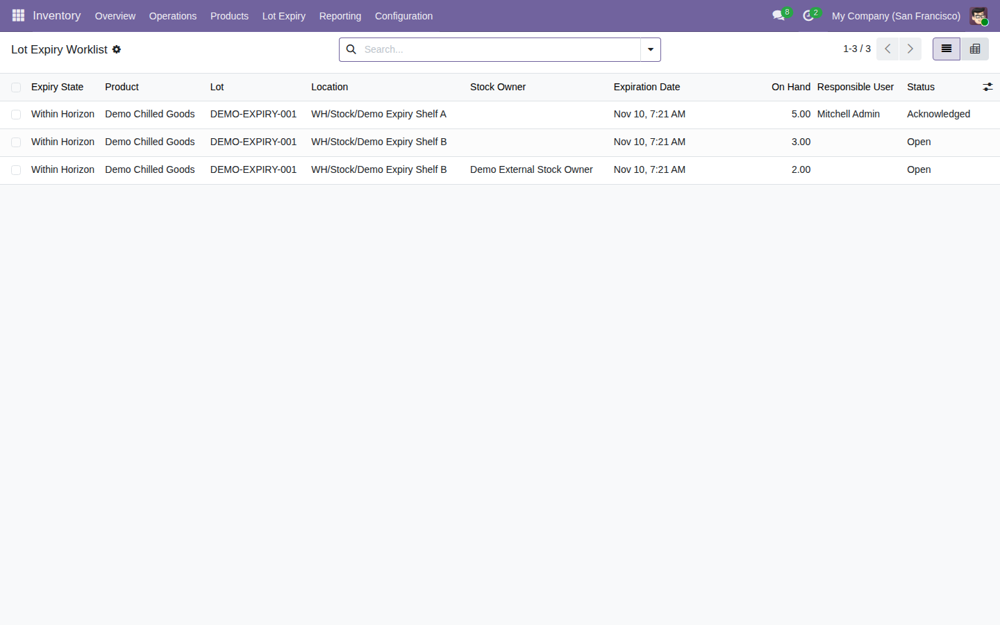

Assign and acknowledge an action for expiring lot stock at each exact internal location and stock owner.
Free, open-source Odoo 19 addon (LGPL-3). Requires the standard product_expiry module.
Open Inventory → Lot Expiry → Scan, then review the Worklist for the selected location.

Tested on Odoo 19 Community. Scans are snapshots capped at 5,000 lot quants and 1,000 positions; rerun after stock or expiry-date changes. The module does not move, reserve or scrap stock. Enterprise compatibility and large-shop performance remain unverified.